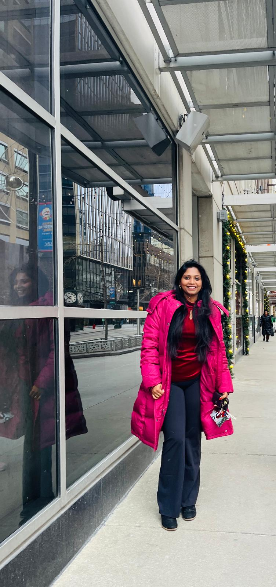

Ages 3–4
Simple stories, picture activities, matching, and early social skills.
Educational resources for children ages 3–10
Helping children understand everyday social situations through simple social stories, meaningful worksheets, and engaging learning resources.
Find the right level
Resources designed for different stages of childhood.
Simple stories, picture activities, matching, and early social skills.
School routines, feelings, friendships, and simple choices.
Problem-solving, communication, and emotional understanding.
Confidence, responsibility, relationships, and everyday life skills.
Everyday situations made easier
Meet the Founder

Welcome to Hello Kind Cubs!
I was born and raised in Chennai, India, and my family roots are in Kanyakumari. Today, I live in Michigan, United States, where I am pursuing my dream of becoming an educator for young children.
I hold a Bachelor’s degree in Literature from the University of Madras and a Master of Business Administration from Anna University.
My husband, Kishore, is a Bioprocess Scientist and has always encouraged me to follow my dreams. Together, we are raising our two wonderful children, Krish and Maya, who inspire me every day.
Watching my children grow has been one of the biggest learning experiences of my life. Like many parents, I have experienced everyday situations involving emotions, friendships, sharing, disappointment, school routines, confidence, and independence.
These experiences inspired me to become an educator and to create Hello Kind Cubs. My main goal is to bring positive change to children’s lives.
This website provides short, easy-to-understand social stories and related worksheets for educators, families, and caregivers. All the resources are free because I believe helpful learning materials should be available to every child.
I will be happy even if one story or worksheet helps just one child feel safer, kinder, more confident, or better understood.
Created with love and care by a mom who dreams of becoming a young children’s educator.
With love,
Pavithra Kishore
Founder, Hello Kind Cubs
Why Hello Kind Cubs?
✓ Simple, child-friendly language
✓ Practical everyday situations
✓ Resources organized by age and topic
✓ Designed to build kindness and confidence